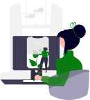
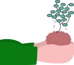
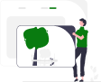

What do we stand for?
To revolutionize agriculture by integrating advanced mechanization and IOT in field and post harvest operations, fostering a sustainable and profitable farming ecosystem.

What's next for us?
Mechanize all field and post-harvest operations, integrating IOT for enhanced efficiency and establishing a highly efficient field monitoring and management system.

Get to know us
Founded in 2014 by Er. Fr. Moorthi at CEG, Anna University, the club began as the Organic Farming Club (OFC) to prove organic farming’s profitability, supported by Actor Raghavendra Lawrance.
Activities paused during COVID-19, leading to a shift in focus. Instead of just practicing organic farming, the club began developing agricultural technology.
In 2023, it was re-launched by our Vice Chancellor as SFRC, now dedicated to technology-driven farming solutions.
Collaboration With NSS, YRC, NSO and NCC
As the first step of bringing students into the field, all the mandatory clubs like NSS, NSO, NCC and YRC were brought. Nearly 400 students have visited and worked in the farm as a part of this initiative.